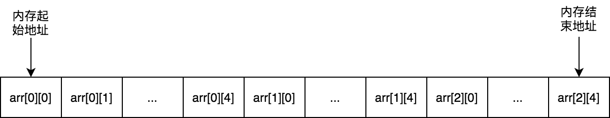
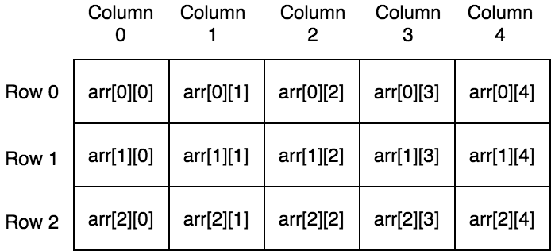

數組
數組是Go語言中常見的數據結構，相比切片，數組我們使用的比較少。
初始化
Go語言數組有兩個聲明初始化方式，一種需要顯示指明數組大小，另一種使用 ... 保留字， 數組的長度將由編譯器在編譯階段推斷出來：
arr1 := [3]int{1, 2, 3} // 使用[n]T方式
arr2 := [...]int{1, 2, 3} // 使用[...]T方式
arr3 := [3]int{2: 3} // 使用[n]T方式
arr4 := [...]int{2: 3} // 使用[...]T方式
警告 注意：
上面代碼中
arr3和arr4的初始化方式是指定數組索引對應的值。實際使用中這種方式並不常見。
可比較性
數組大小是數組類型的一部分，只有數組大小和數組元素類型一樣的數組纔能夠進行比較。
func main() {
var a1 [3]int
var a2 [3]int
var a3 [5]int
fmt.Println(a1 == a2) // 輸出true
fmt.Println(a1 == a3) // 不能夠比較，會報編譯錯誤： invalid operation: a1 == a3 (mismatched types [3]int and [5]int)
}
值類型
Go語言中數組是一個值類型變量，將一個數組作爲函數參數傳遞是拷貝原數組形成一個新數組傳遞，在函數裏面對數組做任何更改都不會影響原數組：
func passArr(arr [3]int) {
arr[0] = arr[0] * 100
}
func main() {
myArr := [3]int{1, 3, 5}
passArr(myArr)
fmt.Println(myArr[0]) // 輸出1
}
空間局部性與時間局部性
CPU訪問數據時候，趨於訪問同一片內存區域的數據，這個稱爲 局部性原理（principle of locality）。局部性原理可以爲細分爲 空間局部性（Spatial Locality） 和 時間局部性（Temporal Locality）。
-
空間局部性
指的是如果一個位置的數據被訪問，那麼它周圍的數據也有可能被訪問到。
-
時間局部性
指的是如果一個位置的數據被訪問到，那麼它下一次還是很有可能被訪問到。所以我們可以把最近訪問的數據緩存起來，內存淘汰算法LRU就是基於這個原理。
我們知道數組內存空間是連續分配的，比如對於[3][5]int類型數組其內存空間分配使用如下圖所示：

觀察上面的二維數組的內存佈局，我們可以得出對於 [m][n]T 類型的數組中任一個元素內存地址的計算公式是：
數組元素的內存地址 = 第一個數組元素的內存地址 + 該元素跨過了多少行 * 元素類型大小 + 該元素在當前行的位置 * 元素類型大小
轉換成僞碼的實現如下：
address(arr[x][y]) = address(arr[0][0]) + x * n * sizeof(T) + y * sizeof(T)
= address(arr[0][0]) + (x * n + y) * sizeof(T)
下面我們根據上面公式來訪問數組中元素，下面代碼中使用到了 uintptr 和 unsafe.Pointer，如果不太瞭解的話可以看本書的 《基礎篇-指針》 那一章節：
package main
import (
"fmt"
"unsafe"
)
func main() {
arr := [2][3]int{{1, 2, 3}, {4, 5, 6}}
for i := 0; i < 2; i++ {
for j := 0; j < 3; j++ {
addr := uintptr(unsafe.Pointer(&arr[0][0])) + uintptr(i*3*8) + uintptr(j*8) // 地址
fmt.Printf("arr[%d][%d]: 地址 = 0x%x，值 = %d\n", i, j, addr, *(*int)(unsafe.Pointer(uintptr(unsafe.Pointer(&arr[0][0])) + uintptr(i*3*8) + uintptr(j*8))))
}
}
}
上面代碼運行結果如下：
arr[0][0]: 地址 = 0xc000068ef0，值 = 1
arr[0][1]: 地址 = 0xc000068ef8，值 = 2
arr[0][2]: 地址 = 0xc000068f00，值 = 3
arr[1][0]: 地址 = 0xc000068f08，值 = 4
arr[1][1]: 地址 = 0xc000068f10，值 = 5
arr[1][2]: 地址 = 0xc000068f18，值 = 6
空間局部性示例
對於數組的訪問，我們可以一行行訪問，也可以一列列訪問，根據上面分析我們可以得出一行行訪問可以有很好的空間局部性，有更好的執行效率的結論。因爲一行行訪問時，下一次訪問的就是當前元素挨着的元素，而一列列訪問則是需要跨過數組列數個元素：

最後我們來進行下基準測試驗證一下：
func BenchmarkAccessArrayByRow(b *testing.B) {
var myArr [3][5]int
b.ReportAllocs()
b.ResetTimer()
for k := 0; k < b.N; k++ {
for i := 0; i < 3; i++ {
for j := 0; j < 5; j++ {
myArr[i][j] = i*i + j*j
}
}
}
}
func BenchmarkAccessArrayByCol(b *testing.B) {
var myArr [3][5]int
b.ReportAllocs()
b.ResetTimer()
for k := 0; k < b.N; k++ {
for i := 0; i < 5; i++ {
for j := 0; j < 3; j++ {
myArr[j][i] = i*i + j*j
}
}
}
}
本人電腦中基準測試結果如下：
goos: linux
goarch: amd64
BenchmarkAccessArrayByRow 121336255 10.3 ns/op 0 B/op 0 allocs/op
BenchmarkAccessArrayByCol 82772149 13.2 ns/op 0 B/op 0 allocs/op
PASS
從上面結果可以看出來，我們可以發現按行訪問（10.3 ns/op）快於按列訪問（13.2 ns/op），符合我們預測的結論。
如何實現隨機訪問數組的全部元素？
這裏將介紹兩種實現方法。這兩種實現方法都是Go語言底層使用到的算法。
第一種方法用在Go調度器部分。G-M-P調度模型中，當M關聯的P的本地隊列中沒有可以執行的G時候，M會從其他P的本地可運行G隊列中偷取G，所有P存儲一個全局切片中，爲了隨機性選擇P來偷取，這就需要隨機的訪問數組。該算法具體叫什麼，未找到相關文檔。由於該算法實現上使用到素數和取模運算，姑且稱之素數取模隨機法。
第二種方法使用算法Fisher–Yates shuffle，Go語言用它來隨機性處理通道選擇器select中case語句。
素數取模隨機法
該算法實現邏輯是：對於一個數組[n]T，隨機的從小於n的素數集合中，選擇一個素數，假定是p，接着從數組0到n-1位置中隨機選擇一個位置開始，假定是m，那麼此時(m + p)%n = i位置處的數組元素就是我們要訪問的第一個元素。第二次要訪問的元素是(上一次位置+p)%n處元素，這裏面就是(i+p)%n，以此類推，訪問n次就可以訪問完全部數組元素。
舉個具體例子來說明，比如對於[8]int數組a，其素數集合是{1, 3, 5, 7}。假定選擇的素數是5，從位置1開始。
- 第一次訪問元素是 (1 + 5)%8 = 6處元素，即a[6]
- 第二次訪問元素是 (6 + 5)%8 = 3處元素，即a[3]
- 第三次訪問元素是 (3 + 5)%8 = 0處元素，即a[0]
- 第四次訪問元素是 (0 + 5)%8 = 5處元素，即a[5]
- 第五次訪問元素是 (5 + 5)%8 = 2處元素，即a[2]
- 第六次訪問元素是 (2 + 5)%8 = 7處元素，即a[7]
- 第七次訪問元素是 (7 + 5)%8 = 4處元素，即a[4]
- 第八次訪問元素是 (4 + 5)%8 = 1處元素，即a[1]
從上面例子可以看出來訪問8次即可遍歷完所有數組元素，由於素數和開始位置是隨機的，那麼訪問也能做到隨機性。
該算法實現如下，代碼來自Go源碼 runtime/proc.go：
package main
import (
"fmt"
"math/rand"
)
type randomOrder struct {
count uint32
coprimes []uint32
}
type randomEnum struct {
i uint32
count uint32
pos uint32
inc uint32
}
func (ord *randomOrder) reset(count uint32) {
ord.count = count
ord.coprimes = ord.coprimes[:0]
for i := uint32(1); i <= count; i++ { // 初始化素數集合
if gcd(i, count) == 1 {
ord.coprimes = append(ord.coprimes, i)
}
}
}
func (ord *randomOrder) start(i uint32) randomEnum {
return randomEnum{
count: ord.count,
pos: i % ord.count,
inc: ord.coprimes[i%uint32(len(ord.coprimes))],
}
}
func (enum *randomEnum) done() bool {
return enum.i == enum.count
}
func (enum *randomEnum) next() {
enum.i++
enum.pos = (enum.pos + enum.inc) % enum.count
}
func (enum *randomEnum) position() uint32 {
return enum.pos
}
func gcd(a, b uint32) uint32 { // 輾轉相除法取最大公約數
for b != 0 {
a, b = b, a%b
}
return a
}
func main() {
arr := [8]int{1, 2, 3, 4, 5, 6, 7, 8}
var order randomOrder
order.reset(uint32(len(arr)))
fmt.Println("====第一次隨機遍歷====")
for enum := order.start(rand.Uint32()); !enum.done(); enum.next() {
fmt.Println(arr[enum.position()])
}
fmt.Println("====第二次隨機遍歷====")
for enum := order.start(rand.Uint32()); !enum.done(); enum.next() {
fmt.Println(arr[enum.position()])
}
}